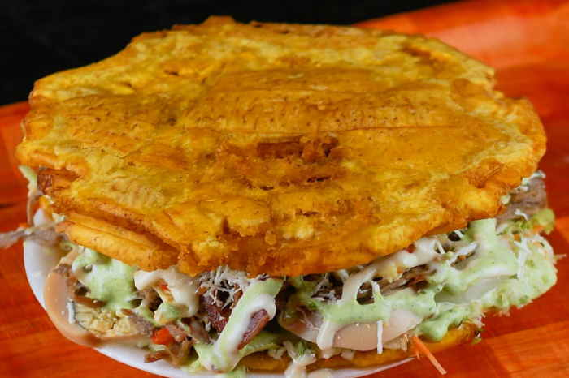

Patacon Zuliano

El patacon zuliano parte de una base hecha con plátano verde o madurado aplanado y frito, la cual se rellena con cualquier tipo de proteína y una serie de vegetales, y se corona con otra tapa de plátano.
Ingredientes
- 4 plátanos verdes
- 1 pechuga de pollo en filetes (1/2 kilo)
- 2 cebollas blancas
- 3 tomates
- 1 ramita de cilantro
- 100 gramos de lechuga
- ¼ kilo de queso blanco rebanado en finas lonjas
- Mayonesa y salsa de tomate (kétchup) al gusto
- Mostaza al gusto
- ½ litro de aceite vegetal
- Sal y pimienta al gusto
Pasos
- Lo primero que debes hacer es preparar y freír los plátanos. Comienza por pelar los plátanos, luego corta cada uno en dos partes iguales en forma diagonal.
- Seguidamente, pon a calentar un sartén con abundante aceite. Una vez haya subido la temperatura, sumerge los plátanos y deja freír durante 10 minutos a fuego medio. Retíralos y elimina el exceso de aceite.
- Inmediatamente, dispón un trozo de plátano encima de una tabla y con ayuda de una tapa o plato, aplánalo. Haz lo mismo con los demás trozos. Luego, lleva de nuevo a freír las lonjas de plátano que resultaron hasta que se vean doradas.
- En paralelo al proceso de cocción de los tostones, pon a cocinar el pollo. Para ello, salpimienta los filetes de pollo y llévalos a un sartén caliente a sellar. Una vez se hayan cocido por ambos lados retira, pícalos en tiras y reserva.
- A continuación, haz un picadillo con el tomate, la cebolla, el cilantro y una pizca de sal y pimienta.
- Dispón un tostón en un plato y encima coloca las tiras de pollo, luego la mezcla de tomate y cebolla, la lechuga, el queso y las salsas de tu preferencia. Tapa con otro tostón y ya estará listo para servir.